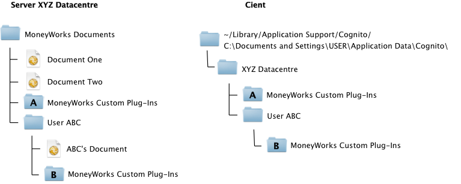

MoneyWorks Manual
Document Maintenance
MoneyWorks Datacentre allows you to perform all day-to-day activities with your accounts data by logging in as a client, however there will be some activities that require direct single-user access using a full-license copy of MoneyWorks Gold.
Creating a new file
MoneyWorks Datacentre does not have a facility for creating new documents. To create a new file, use the New command in MoneyWorks Gold. We recommend that you do the bulk of the setup of a new file in single user mode. When your new set of accounts is ready for prime-time, use Upload to Server to upload it to the server.
Customising Forms and Reports
You can develop and test new forms and reports while logged in to the Datacentre as a client.
If there is no MoneyWorks Custom Plug-Ins folder on the server, you can make a local MoneyWorks Custom Plug-Ins folder on the client using the button in Index to Reports or in the Housekeeping section of the Navigator. A folder made this way may be uploaded to the server. A corresponding folder will be created on the server if it does not already exist.
When you have completed the changes you wish to make to your forms and reports, you can upload the entire changed MoneyWorks Custom Plug-Ins folder to the server using the Upload All button in the Signing window (in Users and Security). This will replace the folder on the server with a copy of your folder. Obviously, you require the Signing privilege to get to that command in the first place. The changes will be seen by other users next time they log in. You can also select a single file and click Upload One.
Note: If you manually change files in the Plugins folder on the server, these changes will not be seen by clients until the server closes down and starts up again (2 minutes after the last client logs out).
Whither Plugins
When you open a local document in MoneyWorks, Custom Plug-ins are normally loaded from a MoneyWorks Custom Plug-Ins folder located in the same folder as the document you open. This allows different sets of Custom Plug-Ins (reports, forms etc) to be used with different documents by putting the documents and their attendant plugins folders into different folders.
With MoneyWorks Datacentre, clients do not have direct access to the folder on the server from which documents are being served. Therefore when you log in to a document on Datacentre that has a Custom Plug-Ins folder residing in the same folder (on the server), then that Custom Plug-Ins folder will be automatically downloaded to the client workstation at login time. Note that the folder is not downloaded every time you log in—just the first time and any time thereafter if the contents of the folder on the server are changed.
Where does the downloaded Plug-Ins folder go?
The MoneyWorks Gold client will create a folder with the same name as the Datacentre (by default this is "Datacentre") in the user's Application Support folder (Application Data on Windows). Inside this folder it will place any downloaded Custom Plug-Ins folder(s). If the document that you log in to on the server resides in a subfolder of the MoneyWorks Documents folder on the server, and has a Custom Plug-Ins folder in that subfolder, then the client will create a subfolder of the same name within it's own Datacentre folder and put the Custom Plug-Ins folder there. Thus you can maintain separate Custom Plug-Ins folders for every document if you wish. Also, portable clients who might log in to more than one Datacentre server will be able to keep the plugins for different Datacentres separate, provided the Datacentres have unique server names.
In the diagram below, you can see how the Custom Plug-Ins folders are replicated from the server to the client. When a client is using Document One or Document Two, plugins folder A will be used. When using Other Document, plugins folder B will be used.

If any files are changed in plugins folder B on the server, it will be replicated to clients the next time they log in to ABC’s Document. Note, however, that if files are deleted from the plugins folder on the server, they will not be deleted on the client.
Standard Plugins are loaded from the folder "MoneyWorks Standard Plug-Ins" that is also expected to be in the Application Support/AppData directory (MoneyWorks recreates this folder is it is not found).
Non-MoneyWorks Gold files
MoneyWorks Datacentre will share MoneyWorks Gold, MoneyWorks Express or MoneyWorks Cashbook documents. Note that using product features not supported by Cashbook or Express will make documents no-longer openable in those products (e.g. using Inventory or Departments).